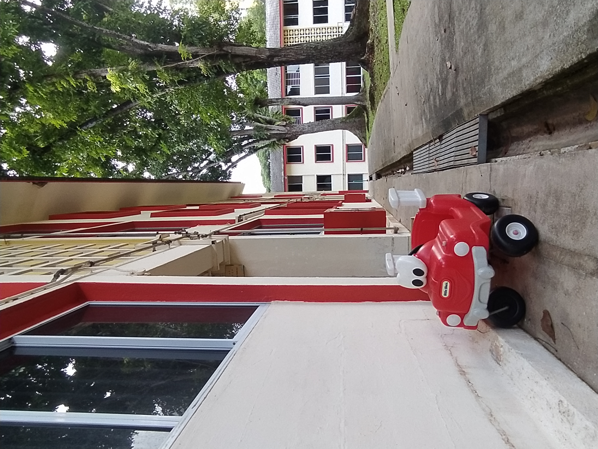
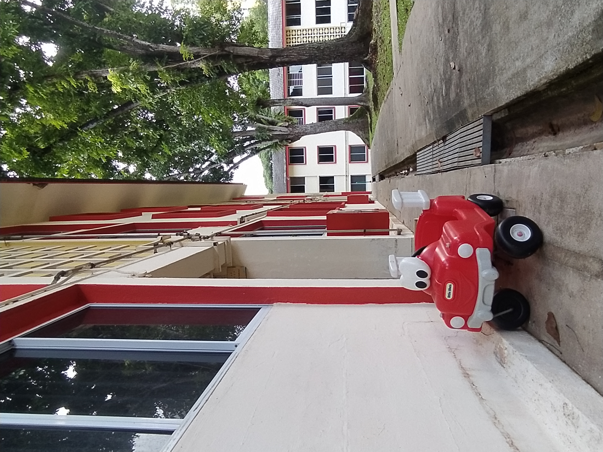

Heritage
Travelling through the rail corridor is also a walk down memory lane.
You might pass by the Old Bukit Timah Railway Station,
which dates back to the early 20th century.
In 2011, it was given conservation status by the URA,
along with two other railway truss bridges around the Bukit Timah area.

Moving pass Bukit Timah, the Railway Corridor also leads to many urban heartlands.
Don't forget to drop by Queenstown, and take a short detour to the Queenstown heritage trail too.
Named after Queen Elizabeth II in 1952, Queenstown features some of the first flats built by the Singapore Improvement Trust (SIT).
Today, you can still see some of these old flats, and many other flats built by the HDB in the early years of Singapore's independence.
 
